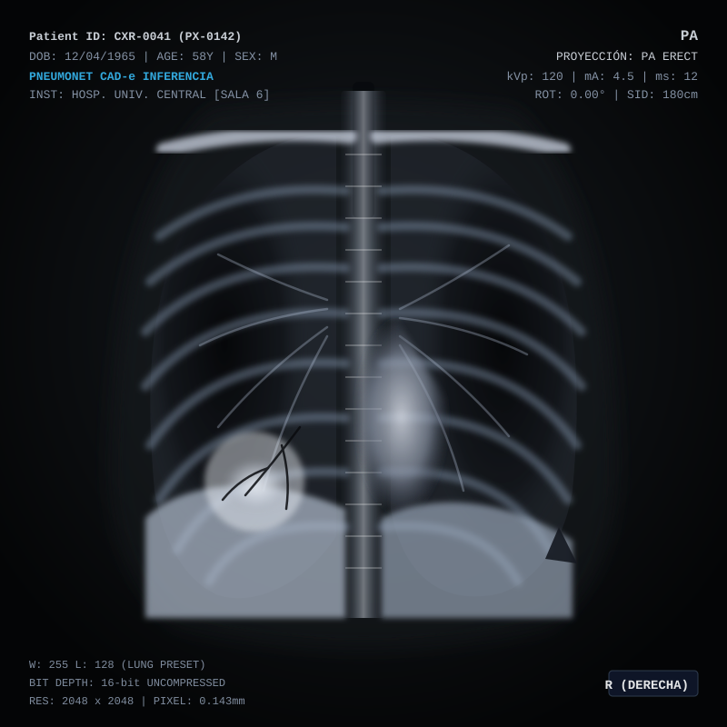

Buenos días, Dr. Arismendi
Resumen de actividad diagnóstica y procesamiento de estudios de tórax.
ANÁLISIS REALIZADOS
1,248
+32 hoy (PACS sincronizado)
CASOS CON RIESGO ALTO
14
Requiere revisión prioritaria (8.2%)
ÚLTIMO ANÁLISIS
Hoy, 10:42 AM
PX-0142
Neumonía detectada (Lóbulo inf.)
| RADIOGRAFÍA | ID DE ANÁLISIS | PACIENTE | FECHA Y HORA | RESULTADO AI | NIVEL DE RIESGO | ACCIONES |
|---|---|---|---|---|---|---|
|
 |
AN-9842 | PX-0142 | 15 Oct 2023, 10:42 | Patrón compatible con neumonía | Alto riesgo (94%) | Ver |
|
|
AN-9841 | PX-0141 | 15 Oct 2023, 09:15 | Sin hallazgos patológicos (Normal) | Bajo riesgo (2%) | Ver |
|
|
AN-9840 | PX-0139 | 14 Oct 2023, 17:30 | Infiltrado focal dudoso | Medio riesgo (48%) | Ver |
|
|
AN-9839 | PX-0138 | 14 Oct 2023, 16:05 | Sin hallazgos patológicos (Normal) | Bajo riesgo (1%) | Ver |
|
|
AN-9838 | PX-0135 | 14 Oct 2023, 14:20 | Patrón compatible con neumonía | Alto riesgo (89%) | Ver |